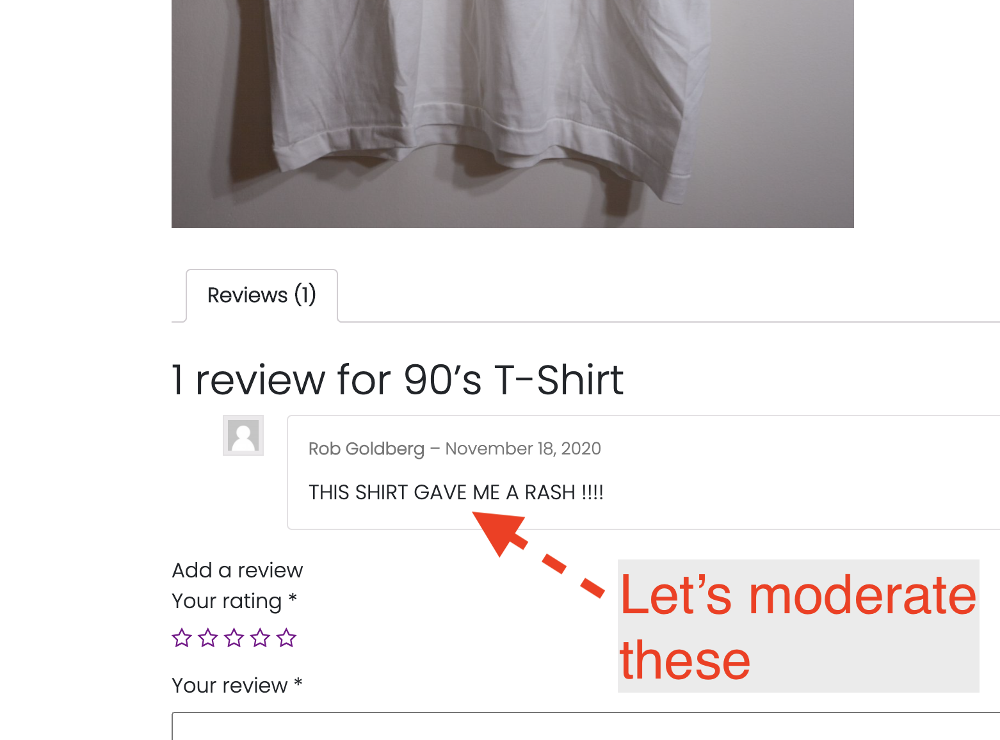

Code Samples for Week 13
Code Sample 13.1 Last Week's Solutions and Some WooCommerce Setup Considerations
This week we'll go over last week's homework and will also discuss some important WooCommerce settings.
Example 1: Solution for Sticky Footer Exercise
The key understanding here is that display:flex is not inherited, and so various solutions that tell you to only target certain styles to the <body> element miss the point that we need the immediate parent of the footer to have certain styles.
See the Pen
To Show Sticky Footer in Understrap by robfromerd (@robfromerd)
on CodePen.
Example 2: Solution for Srcset
For quite awhile now, WordPress has automatically added a srcset attribute to any image in the_content, which you can think of as the main content editor of a page or post. (This would not include any custom fields such as the ones you can add through ACF.)
The best way to think about this is that the browser makes a determination about which image to use from a set of source images defined in a srscet attribute within the img element. (It does this page load and not on resize.) Each separate size of image in the srcset attribute is followed by the width of the image followed by a lowercase "w" – this is to tell the browser how wide the image is because otherwise the browser would have to load it first to determine its width. The sizes part of the srcset is like a media query and the WordPress implentation basically says "fill the width of the available viewport" – you could even leave out the "sizes" part because the default is to fill the width. (This is super hard to test because once the browser has the high res one it does not need the low res one, so you need to use an "Incognito" window in Chrome to test it as per the instructions below.)
See the Pen
WordPress Srcset Behavior by robfromerd (@robfromerd)
on CodePen.
Task 1: Secure Your Reviews
- If you leave your review moderation process wide open, this could happen to you:

- The WooCommerce ratings functionality is tied to the global WordPress comments moderation settings, so go to Settings > Discussion.
- Once there look for "Before a comment appears: ___ Before a comment appears Comment must be manually approved" – check the box to make sure an admin must approve a comment before it appears.
- Then look farther down the page for a field called "Disallowed comment keys," where you can enter a list of disallowed text strings (one per line).
- Enter "viagra, sex, and supplements" each on their own line and save these settings.
- Then open a new browser session where you are not logged in and try entering both a legitimate review and a spurious one using one of the disallowed keywords.
- Then go back to a logged-in browser and look at the Dashboard > Comments, and then check all the different categories of comments displayed on the screen there, and thn DM me the result.
Task 2: Add Social Share Buttons to Products Via Jetpack
- If you didn't already install Jetpack when you installed WooCommerce, add the Jetpack plugin (free but requires a WordPress.com account, which is different from a WordPress.org account).
- NOTE: The page where you sign up on WordPress.com is a bit of a "dark design pattern" – SCROLL DOWN until you can click a "Start Free" button!!!!
- Once activated, go to Jetpack > Settings > Sharing. On this screen you can indicate which social sites' buttons you want to include and which posts to show this on. It makes sense to limit this to the "Products" post type.
- Note that Instagram is not there – this is because Instagram does not allow this.
- When done, DM me a link to a product containing social share buttons.